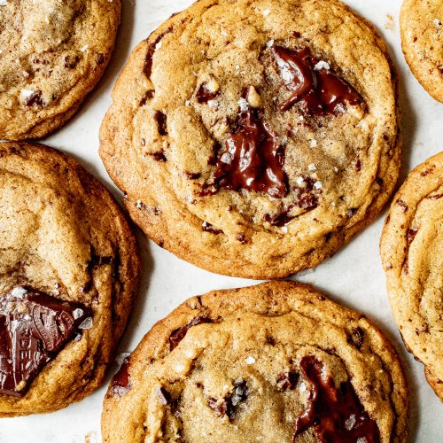

HERSHEY'S Perfect SPECIAL DARK Chocolate Chip Cookies

Description
This recipe takes about 1 hour and 1/2 to complete and it is a recipe for
beginners so don't feel discouraged. This recipe yields about 60 cookies. The
prep time is 25 minutes, the bake time is 8 minutes and the cool time is 35 minutes.
Equipment needed includes a wire rack, an oven, a mixing bowl, and a cookie sheet.
If you are not a fan of dark chocolate you can simply swap out the dark chocolate chips
for regular chocolate chips which also makes for a great cookie and add other toppings
of your choice.
Ingredients
- All-purpose Flour
- Baking Soda
- Salt
- Sticks of Butter(2)
- Granulated Sugar
- Packed Light Brown Sugar
- Vanilla Extract
- Eggs
- 2 Cups of HERSHEY'S SPECIAL DARK Mildly Sweet Chocolate Chips
- A Cup of Chopped Nutes(Optional)
Steps
- Heat oven to 375°F.
- Stir together flour, baking soda and salt. Beat butter, granulated sugar
, brown sugar and vanilla in large bowl with mixer until creamy.
Add eggs; beat well. Gradually add flour mixture, beating well.
Stir in chocolate chips and nuts, if desired. Drop by rounded
teaspoons onto ungreased cookie sheet.
- Bake 8 to 10 minutes or until lightly browned. Cool slightly;
remove from cookie sheet to wire rack. Cool completely.